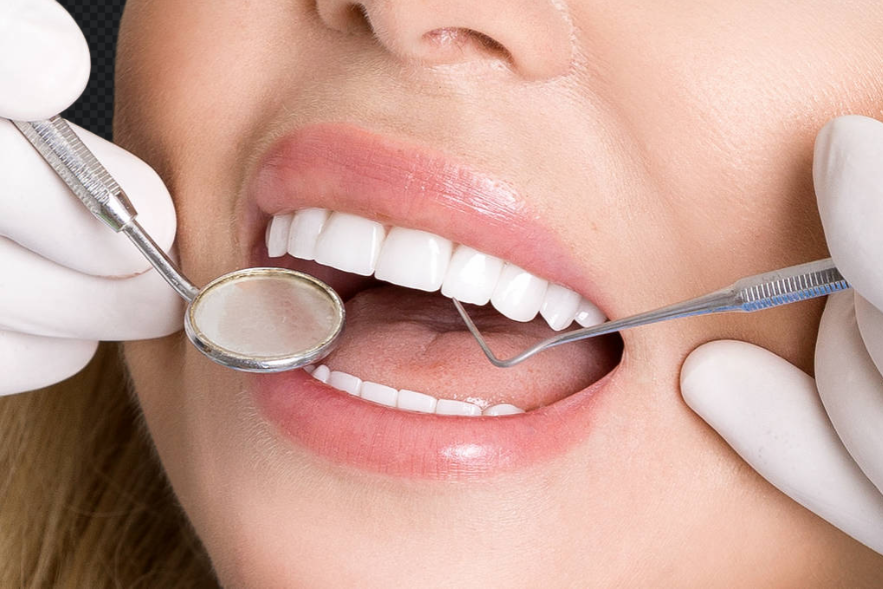

Faceta de Resina: Transforme sua vida, começando pelo seu sorriso
Aqui você pode escrever sua introdução. Por exemplo: "Um sorriso confiante pode abrir portas e transformar a maneira como vemos o mundo e como o mundo nos vê. As facetas de resina são uma das soluções mais procuradas na odontologia estética moderna para alcançar esse objetivo..."
Molestiae cupiditate inventore animi, maxime sapiente optio, illo est nemo veritatis repellat sunt doloribus nesciunt! Minima laborum magni reiciendis qui voluptate quisquam voluptatem soluta illo eum ullam incidunt rem assumenda eveniet eaque sequi deleniti tenetur dolore amet fugit perspiciatis ipsa, odit. Nesciunt dolor minima esse vero ut ea, repudiandae suscipit!
As Principais Vantagens das Facetas de Resina
Se você está considerando este procedimento, é importante conhecer os benefícios que o tornam tão popular na odontologia estética moderna:
Resultado Rápido: Muitas vezes, o tratamento pode ser concluído em uma única consulta, oferecendo uma transformação imediata do sorriso.
Custo-Benefício: Geralmente, as facetas de resina são uma opção mais acessível em comparação com as facetas de porcelana, tornando o sorriso dos sonhos mais alcançável.
Procedimento Minimamente Invasivo: Na maioria dos casos, é necessário um desgaste mínimo ou até nulo da estrutura dental, preservando a saúde dos seus dentes naturais.
Facilidade de Reparo: Diferente de outros materiais, se uma faceta de resina sofrer uma pequena fratura ou lasca, ela pode ser facilmente reparada diretamente no consultório.
Versatilidade: Permitem corrigir uma variedade de imperfeições, como cor, formato, tamanho e até mesmo pequenos desalinhamentos ou espaços (diastemas).
Cuidados Pós-procedimento: Maximizando a Durabilidade
Para garantir que suas facetas de resina permaneçam bonitas e funcionais pelo maior tempo possível, alguns cuidados simples são essenciais no dia a dia. Lembre-se que a resina é um material que, embora resistente, requer atenção.

Aqui estão as principais recomendações da nossa equipe:
Higiene Bucal Rigorosa: Continue com a escovação após as refeições e o uso diário do fio dental. Use escovas de cerdas macias e cremes dentais pouco abrasivos.
Cuidado com Pigmentos: A resina pode manchar com o tempo. Especialmente nos primeiros dias, evite alimentos e bebidas com alta pigmentação (como café, vinho tinto, açaí, curry e refrigerantes).
Evite Hábitos Nocivos: Não use os dentes para abrir embalagens, roer unhas ou morder objetos duros (como tampas de caneta ou gelo). Isso pode lascar ou fraturar as facetas.
Visitas Regulares ao Dentista: O polimento periódico é fundamental. Agende consultas de manutenção (a cada 6 meses, ou conforme recomendado) para polir as facetas, remover manchas superficiais e manter o brilho.
Com os cuidados corretos, seu novo sorriso permanecerá radiante por muitos anos. Agende uma avaliação e descubra o poder de transformação das facetas de resina!
Cirurgiã-dentista dedicada a transformar sorrisos e promover a saúde bucal completa. Com foco em odontologia preventiva e estética, Dra. Perla busca oferecer um atendimento humanizado e baseado na mais recente evidência científica para seus pacientes.
6 Comentários
João Silva
27 de Outubro, 2025 às 14:21
Ótimo artigo, doutora! Tirei os meus 4 sisos de uma vez e a recuperação foi super tranquila seguindo as dicas.
Olá Maria! A cirurgia é feita com anestesia local, então você não sente dor durante o procedimento. O pós-operatório pode ter um leve desconforto, mas é bem controlado com a medicação que prescrevemos. Agende uma avaliação para conversarmos melhor!
Nossa missão é oferecer um tratamento odontológico de excelência, combinando tecnologia de ponta com um atendimento acolhedor e humanizado. Cuidamos do seu sorriso em cada detalhe.
João Silva
Ótimo artigo, doutora! Tirei os meus 4 sisos de uma vez e a recuperação foi super tranquila seguindo as dicas.
Responder
Maria Oliveira
Tenho muito medo de tirar o siso. Dói muito?
Responder
Dra. Perla Spozito
Olá Maria! A cirurgia é feita com anestesia local, então você não sente dor durante o procedimento. O pós-operatório pode ter um leve desconforto, mas é bem controlado com a medicação que prescrevemos. Agende uma avaliação para conversarmos melhor!
Responder
Carlos Souza
Não sabia que o siso podia entortar os outros dentes. Muito informativo, obrigado!
Responder